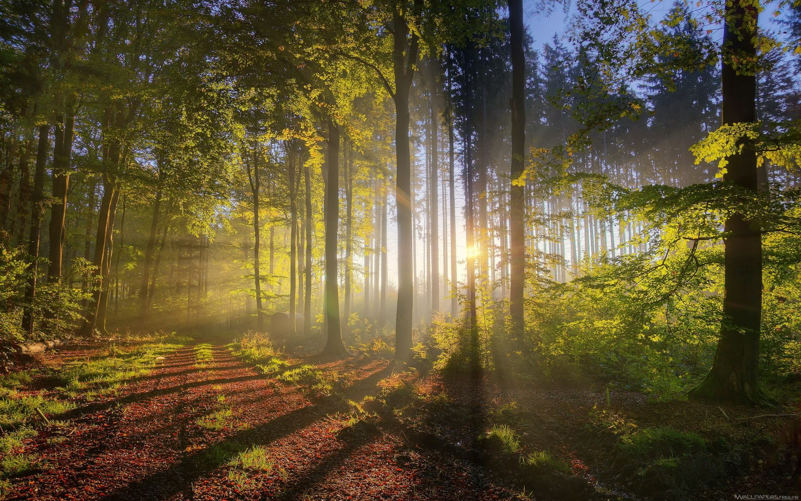

Situé dans la zone l'Asie du Sud-Est, depuis quelques années, Vietnam devient un pays de plus en plus connu pour le voyageur, surtout les Occidentaux.
Voyage au Vietnam, c'est la chance pour découvrir la culture, la gastronomie mais aussi c'est l'occation pour plonger dans les meilleurs plages au plein du soleil. Pour les tourists, qui adorent les activités de la mer, un checklist des endroits ne doit pas à manquer.
1. La baie de Nha Trang
La plus célèbre plage du Vietnam n’en finit pas d’attirer les visiteurs venus du monde entier. S’il est vrai que la baie a connu un développement touristique important, elle n’en demeure pas moins l’une des plus belles de la planète. Cette gigantesque plage urbaine de plus de 7 kilomètres de long vous permettra de vous adonner à de nombreux sports nautiques et de vous initier facilement à la plongée.
2. Les plages de Phu Quoc
Phu Quoc est tout simplement la plus belle île du Vietnam, personne ne pourra vous dire le contraire. Ce petit morceau de terre situé à la frontière du Cambodge dispose d’une multitude de plages paradisiaques au sable fin, où vous pourrez sans problème lézarder en lisant un bon bouquin. Long Beach, la plus célèbre plage de l’île, concentre toutes les adresses branchées de Phu Quoc. Pour plus de tranquillité, préférez Bai Sao ou Ong Lan.
3. Les plages de Con Dao
L’archipel de Con Dao possède quelques-unes des plages les plus sauvages du Vietnam. Assez difficiles d’accès, ses îles paradisiaques offrent une escapade hors des sentiers battus et à l’écart de l’agitation des stations balnéaires de la côte. Seule une poignée d’établissements accueillent les visiteurs pour une expérience façon Robinson Crusoé. Avis aux amateurs !
4. La plage et les dunes de Mui Ne
Mui Ne est une des plus belles plages du Vietnam. Comment ne pas tomber sous le charme de ses hautes dunes et de ses palmiers ballotés par le vent marin. Ce paradis du farniente est également un eldorado pour les amateurs de sports nautiques qui viennent affronter les vagues en planche à voile, en kitesurf ou en jet ski.
5. La baie d'Ha Long
Ce serait vraiment un défaut si vous voyagez au Vietnam mais sans découvrir "local food". Les vietnamiens aiment bien manger dans la rue en bavarent avec leurs amies très tôt le matin ou avant de rentrer chez eux le soir. Essaiez vous au moin une fois, vous allez voir l'ambiance chaleurese et les différents types de nourittures locaux.
Pour plus informations, contactez-nous: